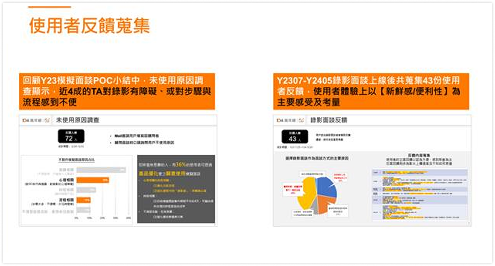
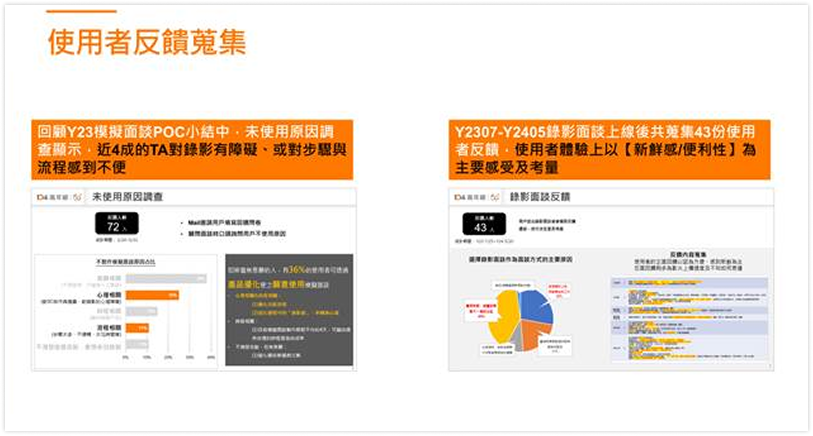

PORTFOLOLIO – 104
第一個舞台—中高齡人力銀行
擔任toC產品獨立作業PM，開始在多角色間切換
承擔既有系統維運、產品規劃、部門營利KPI等，扮演關鍵決策者
AI導入團隊產品應用
在推動一系列 AI 專案時，我的核心原則是：技術必須服務問題，而不是為技術找舞台。因此，我會先掌握 AI 能為既有產品帶來的價值，整合現成技術，再確認 AI 是否能真正解決使用者痛點且受信任，避免成為免洗的功能噱頭。
同時，也會特別著眼在 AI 不應成為新的成本來源。例如在中高齡專案中，我透過任務拆解降低運算量；在即時翻譯專案中，則以用戶分群方式，避免所有流量都進入高成本模型，以達到功能效益與成本的平衡。
多模態AI面談流程設計
在 50+ 專案中，我採用「以終為始」的心態設計 AI 面談流程。
最終目的是期望流程能依不同職類，讓 AI 選用合適提問模組，在過程中透過短問答搭配語意分析，判斷候選人是否需要補答、跳題或重新錄製，確保產出的面談內容更完整、也更符合後端審核需求。
整體流程串接多模態結構，ChatGPT 用於提問邏輯、答案評估與追問生成；Whisper 負責語音轉文字；HeyGen協助以Avatar的形象提供真實互動體驗；最後回到錄影面談 UI，協助候選人順順完成流程。

第一階段：AI小工具
釐清需求背景與提出階段性目標，並建立觀察指標，確保決策依據一致
AI導入架構：內部驗證+可配置、可擴充的模組化後台
在 AI 導入初期，為避免直接影響第一線 C 端而造成風險，我先選擇從能驗證 AI 穩定度的內部流程切入。同時，也規劃了一套可管理 Agents 的後台，讓團隊能在試驗期間快速調整設定。
在這個後台中，包含 prompt、角色、模型選擇與輸出格式等都能由 PM 或營運自行調整，而不必依賴工程反覆改版，使 POC 得以快速迭代。
透過這樣可持續擴充的 AI 架構，整體導入過程變得可控、可調整、也真正能落地。未來不論更換大型模型、新增任務或導入新的 AI Agent，都能直接掛在這個後台模組上。
AI專案面臨挑戰｜資源分配議題
SITUATION
資源排擠，無法取得開發支援
在 AI 導入專案初期，正逢另一支核心產品佔滿開發資源直到 Q2，使得專案無法取得工程支援，也無法展開必要的技術研究與串接驗證。
TASK
如期如質上線
在沒有工程資源的前提下，仍需驗證 AI 導入方案的可行性，並在日後開發資源釋出時，確保專案能「立即、無縫」接續開發。
ACTION
1.採取「自行驗證、降低開發門檻、協調前置條件」的策略，逐步推進
建立知識基礎與技術方向
- 向已有 AI 應用經驗的單位取經
- 與研發工程訪談，釐清後續串接方式與技術限制
2.自主完成粗糙的 POC，降低開發依賴
- 捨棄前端開發等待時間，直接進 API 寫 JSON 模擬 GPT 串接
- 反覆調整與測試 prompt，找到最佳模型
- 將 prompt 包裝成線下 agents，說服營運協助用真實情境做線下 POC，同步驗證模型品質、建立營運端的 AI 使用心態
3.進行協作技術驗證與成本評估
- 在 Colab 雲端部署 Whisper 進行語音轉文字（STT）測試
- 完成 STT 系統的技術調研與費用預估，降低未來工程試錯與預算溝通成本
RESULT
資源釋出後無縫接入開發
因為前期的規格、模型邏輯、技術驗證與成本試算都已完成，當開發資源於 Q2 釋出後， 專案得以零等待、無縫接軌投入開發，並最終順利於 8 月如期上線，且獲得良好評價。
營運滿意度3.8/5，工時節省11%
IMPACT：從被動協作變成主動提需求，AI 導入開始真正拉動整個團隊
在第一階段導入 AI 小工具後，我們成功改善營運作業效率與使用者體驗， 成效從「數據」與「回饋」兩個面向都十分明顯。
1.作業效率提升
- 透過 AI 工具自動化部分重複性工作，營運端工時下降 11%
- 讓團隊能把時間集中在後端審核與高價值溝通，而非行政流程
2.高度的使用滿意度
- AI 工具協助梳理求職者答題內容，流程更清晰、品質更穩定
- 營運團隊回饋平均滿意度達 3.8 / 5
3.PM 角色的信任度與影響力提升
- 在無工程資源下仍推動專案不中斷
- 營運在使用中明顯感受到效率提升，開始主動提出更多 AI 需求。
- 前期技術調研與規格已完整打底，使工程接手開發時摩擦大幅降低。
- 第一階段成功建立團隊對 AI 的信心，也提升 PM 跨部門推動力。
 
